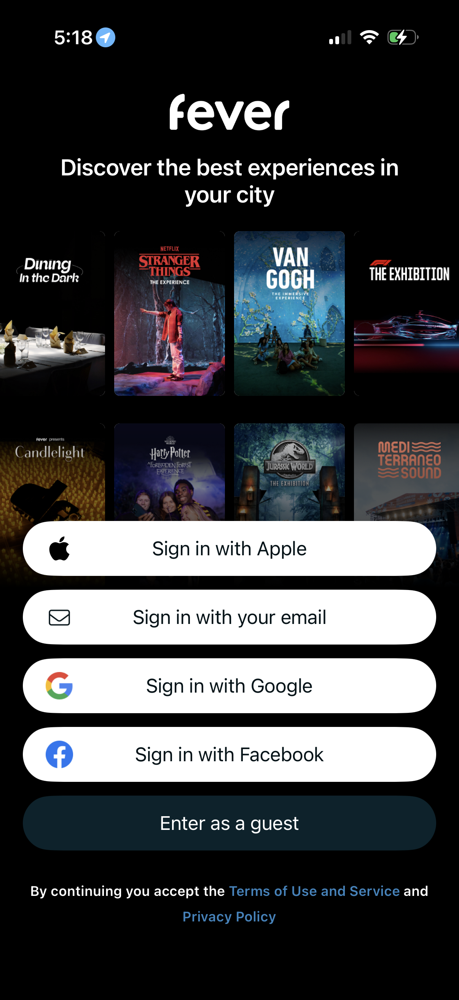
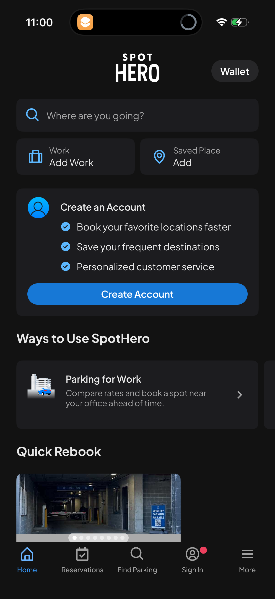
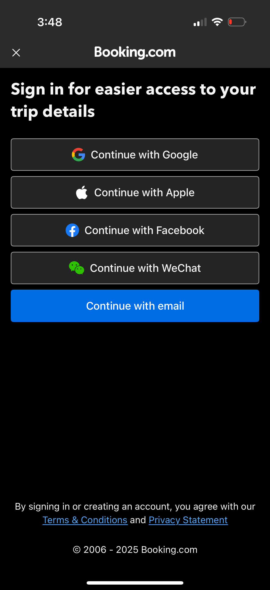
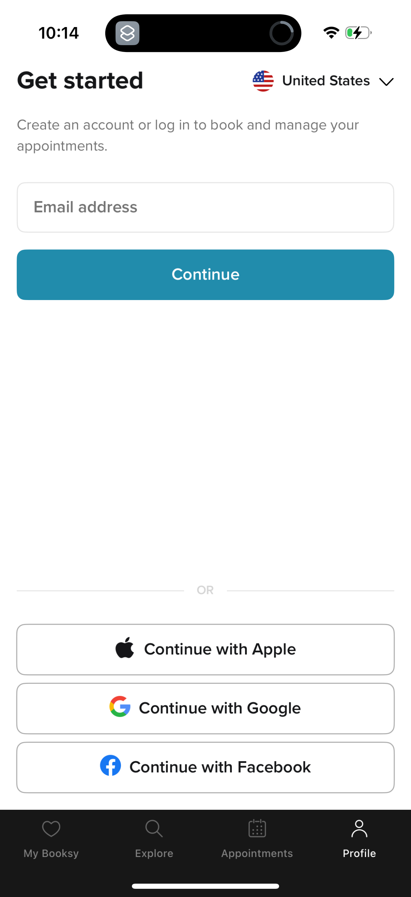

Quick References: Mobile Login / Reservation Auth
TL;DR
예약형 앱 로그인은 "예약 맥락 + 짧은 이점 + 즉시 인증" 패턴이 강합니다. 이 앱은 예약 가능 시간 프리뷰와 카카오 CTA를 첫 viewport에 함께 두는 편이 맞습니다.
예약형 앱 로그인은 "예약 맥락 + 짧은 이점 + 즉시 인증" 패턴이 강합니다. 이 앱은 예약 가능 시간 프리뷰와 카카오 CTA를 첫 viewport에 함께 두는 편이 맞습니다.
Current State

Patterns
Pattern A: 서비스 맥락을 비주얼/프리뷰로 먼저 보여준다


+--------------------------------+ | 오늘 예약 가능 시간 | | 18:00 19:30 21:00 | | 카카오 로그인 | +--------------------------------+
Pattern B: 로그인 이점은 작게, CTA는 크게 둔다


Pattern C: 게스트/미리보기는 보조 행동으로 분리한다
운영 정책상 가능하면 `예약 현황 먼저 보기`를 보조 버튼으로 둘 수 있습니다. 공개 범위는 개인정보 없는 availability로 제한합니다.
Pattern D: 소셜 로그인 버튼은 제공자 가이드를 따른다
Kakao Developers 공식 가이드는 카카오 로그인 버튼의 색상, 심볼, 라벨, radius를 지정합니다. 현재 버튼은 색상은 맞지만 pill 형태와 커스텀 아이콘은 재검토 대상입니다.
Reference Index
- Fever:
references/lazyweb-fever-login.png - SpotHero:
references/lazyweb-spothero-account-prompt.png - Booking.com:
references/lazyweb-booking-login.png - Booksy:
references/lazyweb-booksy-login.png - Kakao Developers Design Guide
- Apple HIG: Sign in with Apple